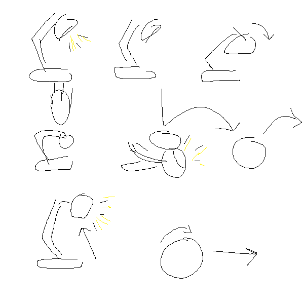
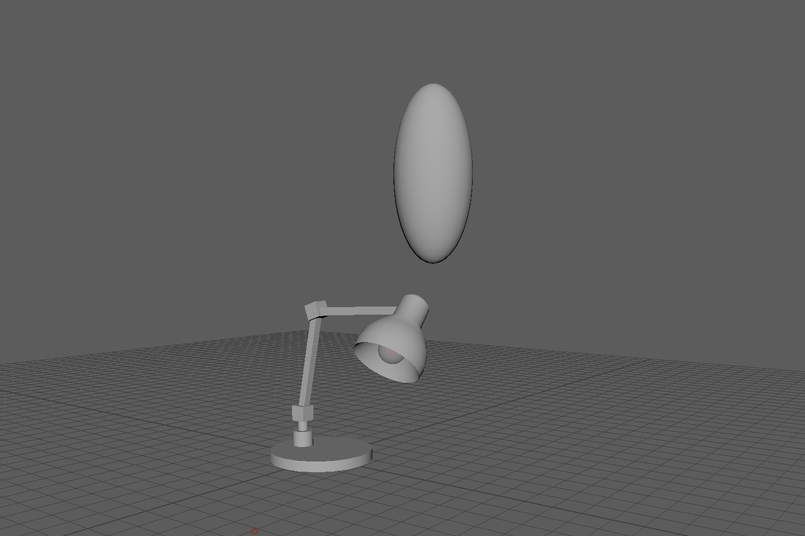
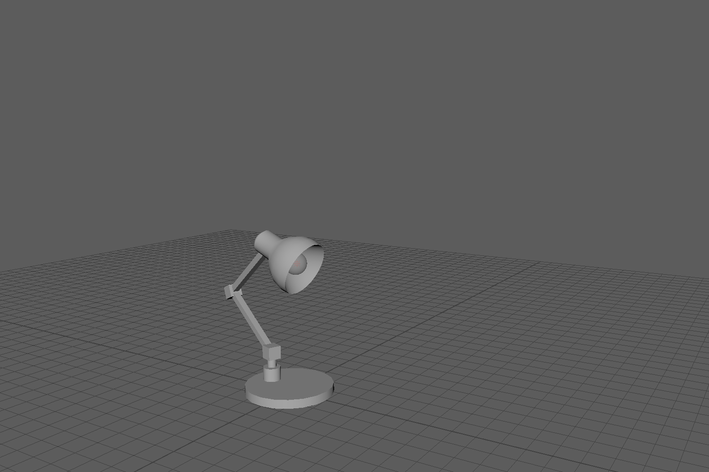

Computer Animation
Spring 2017
Due 3/2/2017
The sequence of events for this animation is relatively simple: first, the lamp's bulb burns out, and the lamp becomes discouraged. A ball then falls on the lamp, and its bulb starts working again. The ball bounces away, and the lamp, thrilled about having light again, jumps. My storyboard for this animation is below:
My initial animation did not have the hop at the end, and it just ended with the lamp watching the ball bounce. I felt that the lamp came off too mopey, so I added the jump to liven it up.
One of the principles of animation that I used was squash and stretch - in the image below, the stretchiness of the ball is clearly visible.
I used another principle of animation, anticipation, when I gave the lamp a little dance before its jump.
Lastly, I used follow through when the lamp gets back up - the bits of the lamp farthest from the base are the last to come to a full stop.